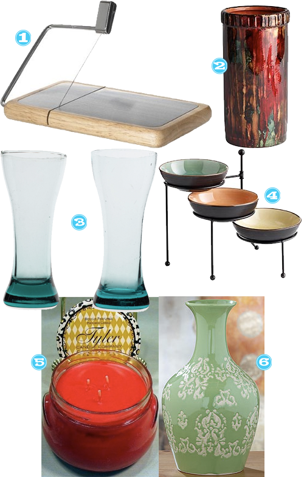

Working on a budget this year for Christmas? Â Have some stuff to buy for folks that are special to you, but don’t want to break the bank doing it?
I’ve got a few cute ideas here, a lot of them center around eating. Â Not sure what that says, but loving on these afforable options to show those special people you care this holiday season.

- Cheese Tray with Cutter – cute thing about this is that nifty little cutter. Â All in one, perfectness.
- Wine Chiller – perfect for entertaining or a night alone!
- Beer Glasses – what dude doesn’t a set of beer glasses made from recycled windshields?
- Condiment Dish with Stand – everything about this is so cute.
- Tyler Candle – great gift for any lovely lady on your list. Â Their scents are so unique and they last forever.
- Stoneware Vase – girls can’t have enough vases, very similar to our love for shoes.


Recent Comments